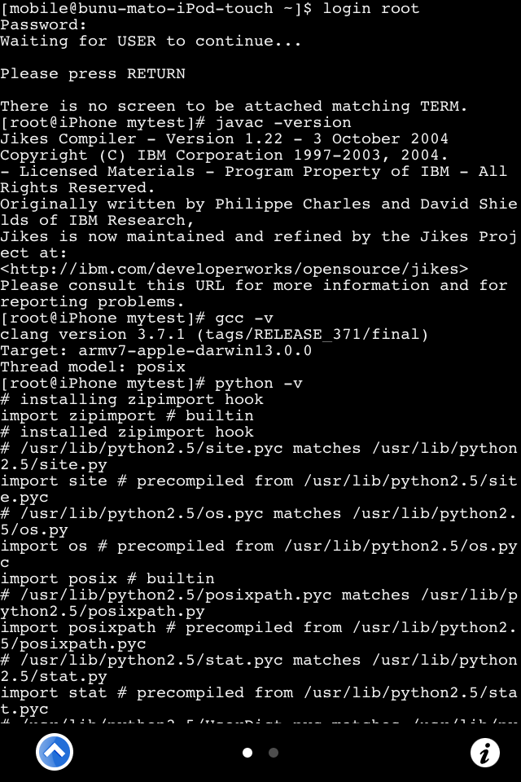
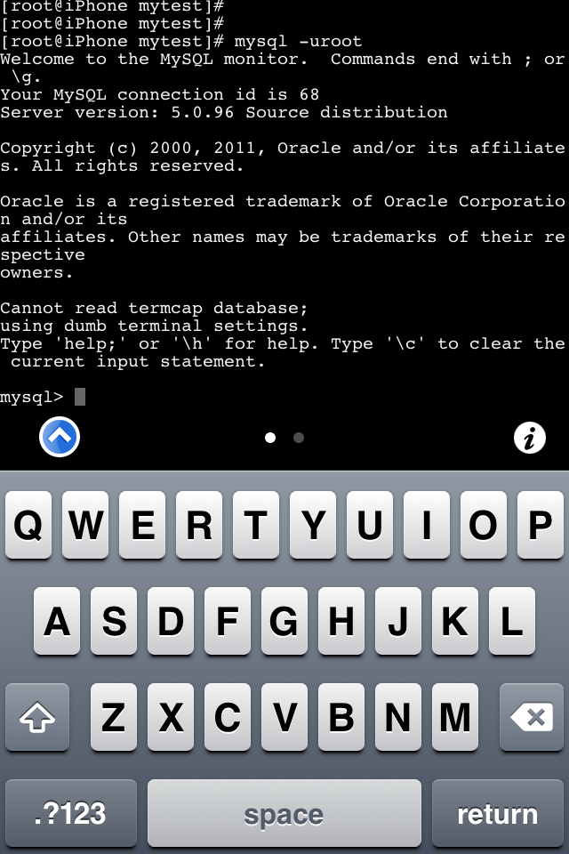
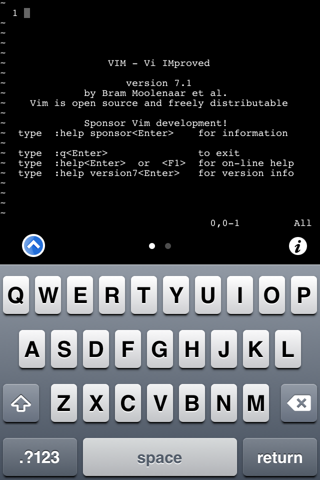
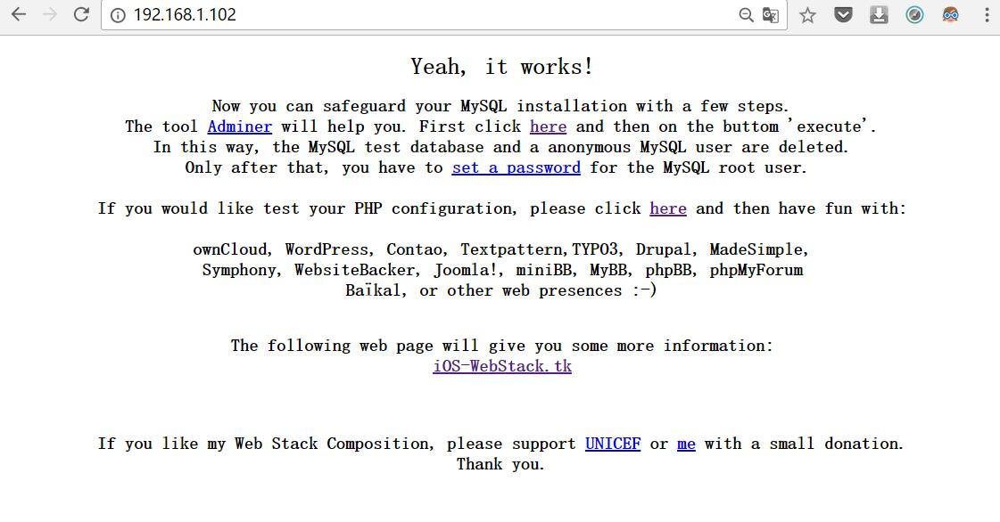
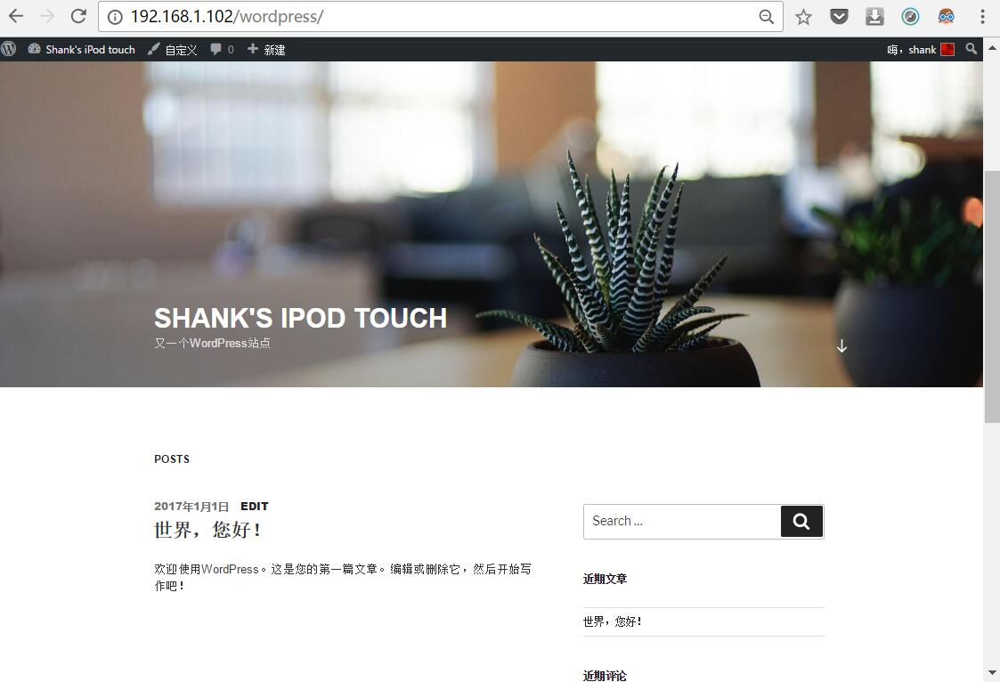

前言
老touch在抽屉里躺了好几年，偶然把它翻出来，这么一个PDA，现在顶多用来听歌，怪可惜的，好像用它搞事情啊。
正题
闲来无事google了一下”iTouch c++”，发现一个大神的博客
这么详细的教程，妥妥的要动手试一试啊。
过程
抄别人的没意思，自己又不愿写，毕竟大神写得太完整了！
虽然有些小问题，我就说说我碰到的问题:
测试 nic 时，输入nic提示没有找到perl
解决：估计是版本升级后安装位置改了，为了不影响老的配置文件，直接建个软链接解决问题
1
ln -s /usr/local/bin/perl /usr/bin/
测试mysql时，我在设置里找半天没看到mysql
解决：原来博客未提到要装mysql，直接在cydia里搜索安装就好
结果



后记
- 轻量级webserver
话说在cydia里搜索”mysql”时，看到还有个搜索结果 “touch-lighttpd-php-mysql”，这个玩意有趣了，轻量级的webserver整合，有了它，可以在touch里搭个wordpress了，哈哈。
安装好插件，浏览器访问touch的ip，精简的”is works”页面……

然后装wordpress我就不在这谈了，直接上结果

但是装好的wordpress遇到点小问题，进入”仪表盘”会出现 服务器500 错误，这个貌似是内存不足，唉~touch的硬伤，写文章是没有问题的，所以不管了。
- apt 工具
按照博客装了 apt 的插件后，装其他插件完全可以向用 linux 一样爽啊
但是同样遇到一个小问题，我使用 “sudo apt-get install XXX” 安装软件时，出现了 “segmentation fault 11…”
google了一番，解决方案是：
1 | sudo rm -rf /var/cache/apt/*.bin |
再推荐大家装些常用插件，内容见另一篇的博客